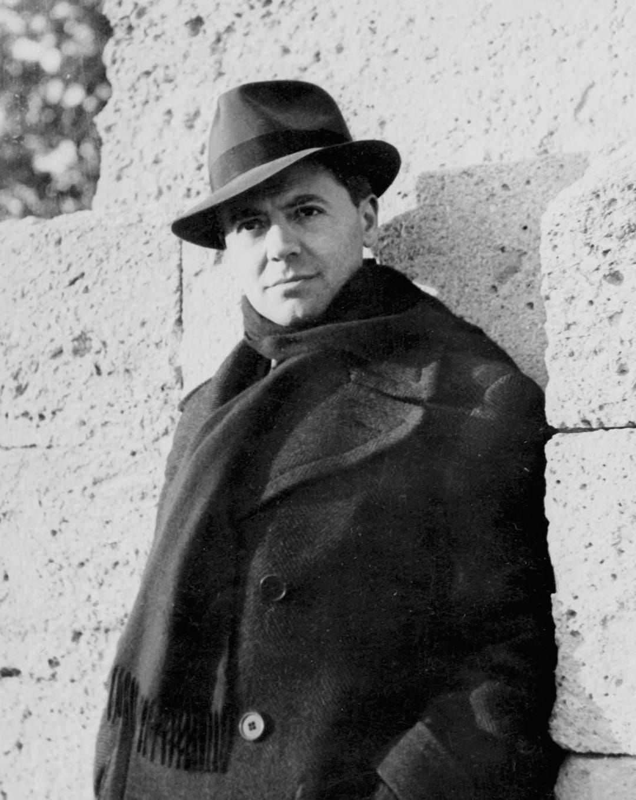

Jean Moulin (1899–1943) est l’une des figures les plus emblématiques de la Résistance française. Préfet révoqué par le régime de Vichy, il rejoint la France libre et devient le principal coordinateur des mouvements de Résistance intérieure.
En 1941, Jean Moulin rejoint Londres et rencontre le général de Gaulle. Il est chargé d’unifier les mouvements de Résistance en France. Sous le nom de « Rex », il organise la création du Conseil national de la Résistance (CNR), structure essentielle pour coordonner les actions clandestines et préparer la Libération.
Jean Moulin est étudié comme le symbole de l’unité de la Résistance française. Son rôle dans la création du CNR et son engagement total jusqu’à sa mort en font l’une des figures les plus respectées de l’histoire de la Seconde Guerre mondiale.